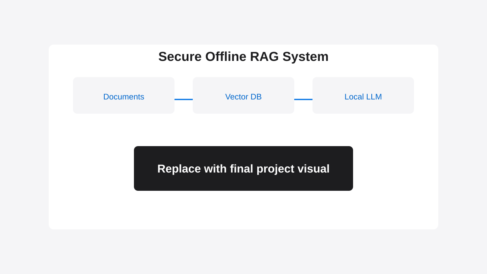

Sensitive documents were blocked from cloud AI tools.
The client needed natural language search across internal files, but privacy and compliance constraints made public APIs non-viable.
Privacy-first document chat using fully local LLMs. Keeps sensitive business data secure while leveraging AI.

The client needed natural language search across internal files, but privacy and compliance constraints made public APIs non-viable.
Local model inference with no outbound API dependency.
Local vector storage for semantic retrieval.
Ingestion, chunking, indexing, and answer pipeline automation.
Let's build a private, production-ready implementation around your data and workflow requirements.
Book a Free Discovery Call